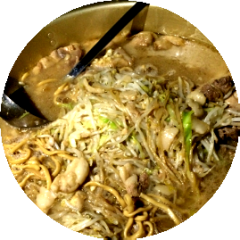

伝統の盛り
盛りの美学とは
都立大学が目黒区に存在した頃、実はラーメン二郎本店は東急線の都立大駅前に存在しました。当時つまり移転前は「次郎」だったのですが、詳しくは割愛します。
そんな歴史的にも関わりの深いラーメン二郎ですが、南大沢に大学が移転しても、その系譜は「野猿街道店」の登場により続いたのです。
「盛りの美学」は、21世紀初頭、まだ大学の名称が「東京都立大学」だった頃に、その端を発します。
我々は、学生の味方であるこの素晴らしい「二郎」と、その魂を受け継ぐ「二郎系」と呼ばれる店を巡ることを目的としています。そして、その記録はメンバー内で共有され、不定期的に冊子などで物理保管されていきます。
そんな歴史的にも関わりの深いラーメン二郎ですが、南大沢に大学が移転しても、その系譜は「野猿街道店」の登場により続いたのです。
「盛りの美学」は、21世紀初頭、まだ大学の名称が「東京都立大学」だった頃に、その端を発します。
我々は、学生の味方であるこの素晴らしい「二郎」と、その魂を受け継ぐ「二郎系」と呼ばれる店を巡ることを目的としています。そして、その記録はメンバー内で共有され、不定期的に冊子などで物理保管されていきます。
活動経歴
| 2000年8月28日 | 野猿街道店が開店 |
| 2001.x.x | 部内冊子「盛りの美学」発行 |
| 2006.6.10 | 野猿街道店が移転、野猿街道店２として新装開店 |
| 2006-2012 | オケ内には常にジロリアンが数人生成され続けた。 |
| 2012.x.x | LINEグループ「盛りの美学」誕生 |
| 2013.10.x | 野猿名物「鍋二郎」に参加、「白い悪魔」の恐怖 |
| 2013- | 都内や近隣の二郎（系）に遠征し、その内容をLINEに報告するスタイルが確立 |
| 2014.10.x | 第二回鍋二郎、京王線で二郎の入った寸胴を運搬する。寸胴の使用について四季の後輩に後日怒られる。 |
| 2015.2.x | 美学再興の立役者であった14年度部長が、ウィーンへ1年間の留学へ。冊子「盛りの美学 第２版」発行 |
| 2015.9.x | 美学のメンバーでは無いが、部員が札幌二郎に上陸 |
| 2015.10.x | 第三回鍋二郎、美学として遂に鍋を購入。車を使った運搬など、安定的な鍋二郎への道が開かれる |
参加要項
条件
- オケ部員である
- 二郎を愛せると誓う
- ニンニク入れますか
- ﾔｻｲﾏｼﾏｼﾆﾝﾆｸｱﾌﾞﾗ
学則
- 食べたい時が吉日
- 列は全員揃ってから
- 頼んだ物は残さない
- 店員・生産者・自然に感謝
- 全力を尽くす
活動概要
- ホームは野猿街道店２
- 遠征は機会を逃さず積極的に
- お店に迷惑を掛けぬよう撮影
- メニュー・店内等を記録
- LINE等に投下

旅は世界の拡張
旅の目的
ここで定義する「旅」は自力で行うものを言います。
「旅」と一言で言っても、色々な形が存在します。友人数人と日帰りで近場のレジャー施設に行くのも旅だし、一人で日本を巡るのも旅でしょう。
そんな様々な形の「旅」がある中でも、目的は存外似ていたり。それは「非日常への脱出」或いは「価値観の変容」だったり。
日常があるからこその非日常。そんな当たり前の事ですが、毎日頑張ってオケの練習をしている人こそ、時折外の空気を吸ってみてはいかがでしょうか。
「旅」と一言で言っても、色々な形が存在します。友人数人と日帰りで近場のレジャー施設に行くのも旅だし、一人で日本を巡るのも旅でしょう。
そんな様々な形の「旅」がある中でも、目的は存外似ていたり。それは「非日常への脱出」或いは「価値観の変容」だったり。
日常があるからこその非日常。そんな当たり前の事ですが、毎日頑張ってオケの練習をしている人こそ、時折外の空気を吸ってみてはいかがでしょうか。
オケ休み
オケ休みとは
- 年末年始（約一週間）
- 期末試験期間（約一ヶ月）
- お盆（練習日一回分）
- 合宿後（概ね一週間）
行ける範囲（例）
1日：関東一円、移動時間が多い
2日：幹線沿いなら中京～南東北
3日：飛行機を使えば東アジアも
4日：温泉連泊や自転車旅も可能
5日：一般的な海外旅行が可能に
6日：準備を含めオケ休みの限界
7日～：現役の内は厳しい
2日：幹線沿いなら中京～南東北
3日：飛行機を使えば東アジアも
4日：温泉連泊や自転車旅も可能
5日：一般的な海外旅行が可能に
6日：準備を含めオケ休みの限界
7日～：現役の内は厳しい
お土産どうしよう
オケ民へのお土産なら、取り敢えず20個入り以上の土地のお菓子や、お酒を買っていけば間違いないでしょう。
個人あてのお土産なら、一人1000円を超えない程度かなと。
いや、買う義務なんて無いので、写真や土産話だけでも良いのです！
個人あてのお土産なら、一人1000円を超えない程度かなと。
いや、買う義務なんて無いので、写真や土産話だけでも良いのです！
更新履歴
aa
a
a
a
a
a
a
a
a
a